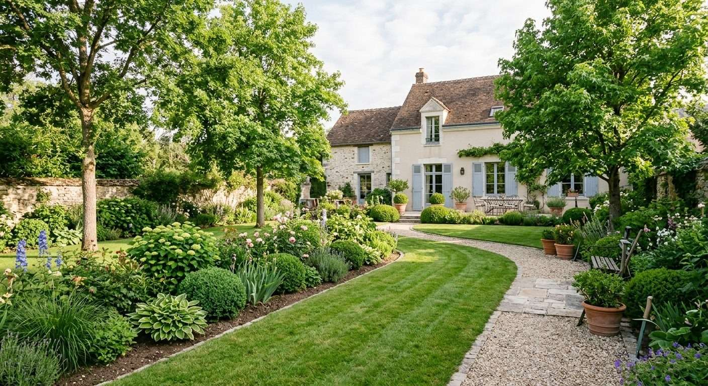

Dirigeant
L’entreprise est dirigée par Stéphane Boisumeau.

Aménagement paysager à Gif-sur-Yvette (91)
Stéphane Boisumeau conçoit, aménage et entretient les espaces extérieurs à Gif-sur-Yvette, en Essonne. Un seul interlocuteur, joignable par téléphone.
Nos prestations
Décrivez votre terrain et vos envies : nous vous conseillons.
Un projet d’aménagement pensé à partir de votre terrain et de vos envies.
En savoir plusCréation de massifs, plantation d’arbustes, de vivaces et d’arbres.
En savoir plusL’entreprise
Quelques repères sur l’entreprise.
L’entreprise est dirigée par Stéphane Boisumeau.
Services d’aménagement paysager : conception, plantation et entretien d’espaces verts.
Basée à Gif-sur-Yvette, dans l’Essonne (91).
Contact
Appelez-nous ou écrivez-nous : nous revenons vers vous pour votre devis.